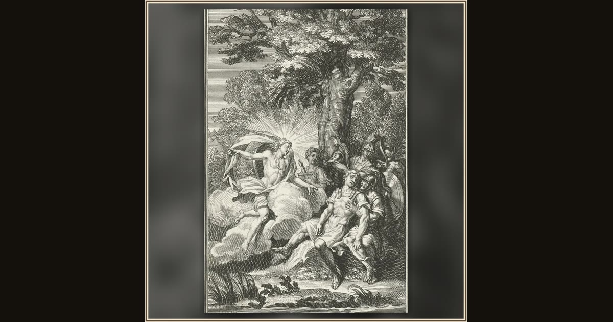

Apollo geeft Hector nieuwe kracht
workshop of Bernard Picart, after drawing by Bernard Picart · 1710 · rijksmuseum
Apollo approaches Hector as he sits among his comrades after Ajax struck him with a stone; Zeus has sent the god to restore Hector's strength and speak to him (15.243). Explore its place in Homer's Iliad, Book XV, line 243.